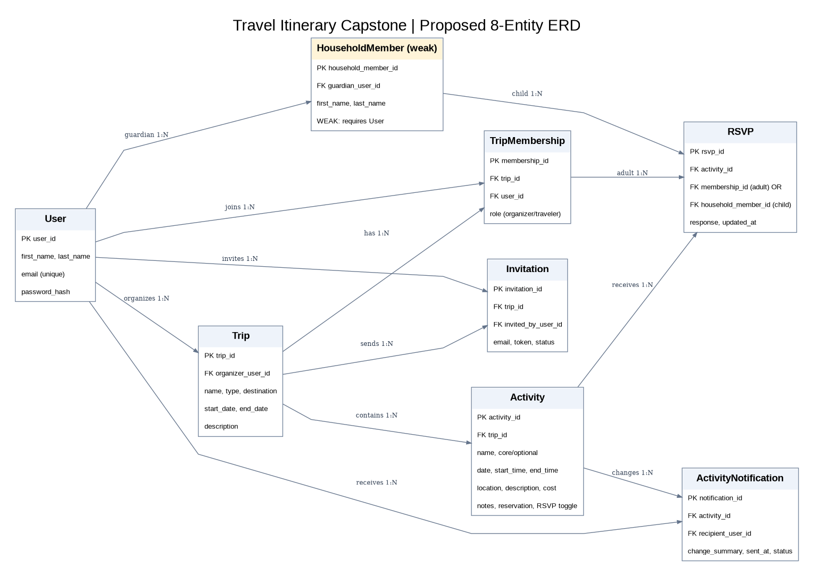

Capstone Project: Conceptual Model and ERD
This document describes the proposed database entities and relationships for our group trip-planning website.
The application allows users to organize trips, create shared itineraries, invite travelers, manage household members, and collect RSVPs for individual activities.
1. Project Overview
Our capstone project is a shared trip-planning application designed for different types of group travel, including family reunions, birthday celebrations, destination weddings, and corporate retreats.
Users can create accounts, organize trips, invite other travelers through email, and build itineraries containing scheduled activities. Accepted travelers can view activity details and submit RSVP responses.
Organizers can review attendance summaries and update activities. The application communicates activity changes through email notifications.
2. Proposed Database Entities
Our conceptual model contains eight proposed entities. Each entity represents information the application needs to store or manage.
Entity 1: User
Stores account information for adults who use the application.
- user_id (Primary Key)
- first_name
- last_name
- password_hash
- created_at
A User can organize multiple trips, accept invitations, and participate in activities.
Entity 2: Trip
Stores the main information about each group trip.
- trip_id (Primary Key)
- organizer_id (Foreign Key to User)
- trip_name
- trip_type
- destination
- start_date
- end_date
- description
- created_at
Each Trip has one organizer and can contain multiple activities, invitations, and travelers.
Entity 3: TripMembership
Connects users to the trips they organize or attend.
- membership_id (Primary Key)
- trip_id (Foreign Key to Trip)
- user_id (Foreign Key to User)
- role (Organizer or Traveler)
- joined_at
TripMembership allows one User to participate in multiple Trips, with a different role in each Trip.
Entity 4: Invitation
Stores email invitations sent to prospective travelers.
- invitation_id (Primary Key)
- trip_id (Foreign Key to Trip)
- invited_email
- invited_by (Foreign Key to User)
- invitation_token
- status (Pending or Accepted)
- sent_at
- accepted_at
Each Invitation belongs to one Trip. When a user accepts an invitation, the application creates or confirms their TripMembership.
Entity 5: HouseholdMember
Stores children or dependents managed by an adult account.
- household_member_id (Primary Key)
- guardian_user_id (Foreign Key to User)
- first_name
- last_name
- created_at
HouseholdMember is our proposed weak entity because it depends on a guardian User for its existence.
Children do not need separate accounts or passwords. Their guardian manages their participation and RSVPs.
Entity 6: Activity
Stores individual events within a trip itinerary.
- activity_id (Primary Key)
- trip_id (Foreign Key to Trip)
- activity_name
- activity_type (Core or Optional)
- activity_date
- start_time
- end_time
- location_name
- location_address
- description
- estimated_cost
- cost_notes
- event_notes
- reservation_confirmation
- reservation_link
- rsvp_required
- created_at
- updated_at
Each Activity belongs to one Trip. The organizer creates and edits activities, while accepted travelers can view their details.
Activities must have a valid date, start time, and end time before they can be saved.
Entity 7: RSVP
Stores attendance responses for individual activities.
- rsvp_id (Primary Key)
- activity_id (Foreign Key to Activity)
- user_id (Optional Foreign Key to User)
- household_member_id (Optional Foreign Key to HouseholdMember)
- response (Going, Maybe, Not Going)
- responded_at
Each RSVP belongs to one Activity and represents one traveler.
An RSVP is associated with either an adult User or a HouseholdMember, but not both.
Not Responded is calculated when a traveler has not yet submitted an RSVP.
Entity 8: ActivityNotification
Stores records of email notifications associated with activity changes.
- notification_id (Primary Key)
- activity_id (Foreign Key to Activity)
- recipient_user_id (Foreign Key to User)
- notification_type
- sent_at
- delivery_status
Each Activity can have multiple notifications, and each notification is associated with an adult User receiving an update.
3. Entity Relationships
| Entity A | Relationship | Entity B |
|---|---|---|
| User | One-to-Many | Trip |
| User | One-to-Many | TripMembership |
| Trip | One-to-Many | TripMembership |
| Trip | One-to-Many | Invitation |
| User | One-to-Many | HouseholdMember |
| Trip | One-to-Many | Activity |
| Activity | One-to-Many | RSVP |
| Activity | One-to-Many | ActivityNotification |
| User | One-to-Many | ActivityNotification |
4. Weak Entity
Our proposed weak entity is HouseholdMember. A HouseholdMember represents a child or dependent whose participation is managed by an adult User.
A HouseholdMember cannot exist independently of its guardian in our application. The guardian creates and manages the HouseholdMember record.
The guardian also submits RSVPs on behalf of the child. This allows family organizers to calculate attendance without requiring children to create separate accounts.
5. Team Entity Responsibilities
Each team member will take ownership of at least one entity and participate in implementing its related frontend and backend functionality. The assignments below are proposed and should be confirmed by the team.
| Team Member | Primary Entity | Related Functionality |
|---|---|---|
| Lauren | Activity | Add/Edit Activity and Activity Details & RSVP |
| Zoey | Trip | Create/Edit Trip and Trip Itinerary |
| Morelia | Invitation | Travelers & Invites and Accept Invitation |
| Melissa | User | Account access, Landing Page, and My Trips |
6. Entity Relationship Diagram (ERD)
The following diagram visually represents the proposed database entities, their attributes, and their relationships.

7. Conclusion
This conceptual model provides the initial database structure for our group trip-planning application. The eight proposed entities support user accounts, trip organization, invitations, household management, activities, attendance tracking, and activity notifications.
The model supports all four capstone personas while remaining within the project's approved eight-page application structure.
Entity ownership and final database constraints will be reviewed by the development team before implementation.